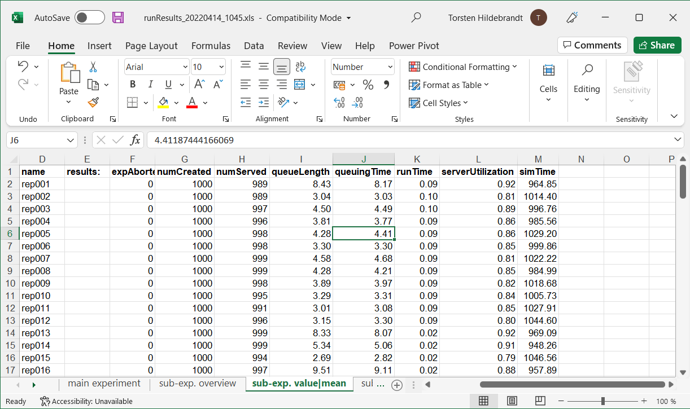

Unresolved directive in <stdin> - include::/Users/Torsten.Hildebrandt/eclipse21-09_workspace/jasima-site/src/main/java/examples/simulation/events/MM1ModelEventsExtendedStatistics.java[tag=jobClass]Collecting Statistics
Table of Contents
The outcome of a simulation run usually generates various result values. Such results can be simple counters or more complex quantities like for instance average/min/max queuing times.
Results in jasima are usually returned as a set of name/value-pairs contained in a Map. In a SimComponent or SimEntity you can add values to this map in two ways. One is to override the produceResults lifecycle method and add them to the Map passed as an argument. The other way is to call the addResult method at any time during a simulation run.
To collect certain summary statistics like mean/min/max/variance/count of values during a simulation run in an efficient way, the classes SummaryStat and TimeWeightedSummaryStat can be used. But lets look at an example to see how exactly they are used.
For this we look at an extended version of the event-oriented M/M/1 model already used in Event-oriented Simulation. The source code of the example is contained in the class MM1ModelEventsExtendedStatistics, available in package examples.simulation.events of project_template_standalone.
The original version already contained the two counters numServed and numCreated. They were passed back as the result of the simulation by overriding the produceResults lifecycle method of our SimComponent. In this example we will add additional statistics to collect information on
-
the queuing time of a job (using a
SummaryStatobject), -
the average queue length (using a
TimeWeightedSummaryStatobject) -
the server’s utilization (using a
TimeWeightedSummaryStatobject).
General Setup
To be able to collect this information, we have to start by introducing a Job class. In the old version, a job was just represented by a number. We are introducing the Job class containing an attribute to store the time when the job entered its queue. Also note that instead of using Integers (the job’s number), our waiting queue q now contains Job objects.
New Job class holding additional attributes.
The queuing time and queue length/utilization values are collected in objects of type SummaryStat / TimeWeightedSummaryStat.
Unresolved directive in <stdin> - include::/Users/Torsten.Hildebrandt/eclipse21-09_workspace/jasima-site/src/main/java/examples/simulation/events/MM1ModelEventsExtendedStatistics.java[tag=newFields]They are initialized at the end of the init() method:
Unresolved directive in <stdin> - include::/Users/Torsten.Hildebrandt/eclipse21-09_workspace/jasima-site/src/main/java/examples/simulation/events/MM1ModelEventsExtendedStatistics.java[tag=init]Queuing Time / Using SummaryStat
To keep track of the queuing time we first have to remember when a job entered the queue. Therefore we first create a Job object in the beginning of the createNext method and record the queuing time start:
Unresolved directive in <stdin> - include::/Users/Torsten.Hildebrandt/eclipse21-09_workspace/jasima-site/src/main/java/examples/simulation/events/MM1ModelEventsExtendedStatistics.java[tag=createJob]Now all we have to do is to calculate a job’s queuing time and call the SummaryStat's value method of our statistics object. The right place to do this is in the checkStartService() method. We add the following lines there:
Unresolved directive in <stdin> - include::/Users/Torsten.Hildebrandt/eclipse21-09_workspace/jasima-site/src/main/java/examples/simulation/events/MM1ModelEventsExtendedStatistics.java[tag=calcQueuingTime]That’s all there is to it, SummaryStat takes care of remembering the number of values encountered, their means, min/max and variance/standard deviation. These summary statistics can be accessed whenever needed by using the methods mean(), min(), max() etc. of SummaryStat. Now all that is left is to add the statistics object to the result map in the produceResults method:
Unresolved directive in <stdin> - include::/Users/Torsten.Hildebrandt/eclipse21-09_workspace/jasima-site/src/main/java/examples/simulation/events/MM1ModelEventsExtendedStatistics.java[tag=produceResults]Avg. Queue Length / Using TimeWeightedSummaryStat
TimeWeightedSummaryStat works similar. The main difference is, that we are now using a value-method that has two arguments. The first is the value we are interested in (like the queue length), the second is always the current simulation time. We usually call this method whenever the underlying value changes, closing a time interval starting with the last call of value() and starting a new interval where our underlying quantity has a new value.
To record the average queue length we have to add a call when our queue length increases in the method createNext:
Unresolved directive in <stdin> - include::/Users/Torsten.Hildebrandt/eclipse21-09_workspace/jasima-site/src/main/java/examples/simulation/events/MM1ModelEventsExtendedStatistics.java[tag=queueLength1]We have to make another call whenever the queue length decreases in the method checkStartService:
Unresolved directive in <stdin> - include::/Users/Torsten.Hildebrandt/eclipse21-09_workspace/jasima-site/src/main/java/examples/simulation/events/MM1ModelEventsExtendedStatistics.java[tag=queueLength2]As a last step besides adding our statics variables to the simulation results we have to properly close the last time interval. The simplest way of doing this is in the simEnd method. The value passed as the first argument to the value method doesn’t matter in this case:
Unresolved directive in <stdin> - include::/Users/Torsten.Hildebrandt/eclipse21-09_workspace/jasima-site/src/main/java/examples/simulation/events/MM1ModelEventsExtendedStatistics.java[tag=simEnd1]Track Server Utilization using TimeWeightedSummaryStat
To keep track of the server utilization we can also use TimeWeightedSummaryStat assuming that a value of 0 means an idle server and 1 means a busy server. The calls to value() should now be towards the end of checkStartService (server is getting busy):
Unresolved directive in <stdin> - include::/Users/Torsten.Hildebrandt/eclipse21-09_workspace/jasima-site/src/main/java/examples/simulation/events/MM1ModelEventsExtendedStatistics.java[tag=serverUtil1]The server is getting idle again in the method finishedService:
Unresolved directive in <stdin> - include::/Users/Torsten.Hildebrandt/eclipse21-09_workspace/jasima-site/src/main/java/examples/simulation/events/MM1ModelEventsExtendedStatistics.java[tag=serverUtil2]For the server utilization we are also using the second way of adding a result value to the simulation. We can do this by calling the addResult method of each SimComponent or SimEntity.
Unresolved directive in <stdin> - include::/Users/Torsten.Hildebrandt/eclipse21-09_workspace/jasima-site/src/main/java/examples/simulation/events/MM1ModelEventsExtendedStatistics.java[tag=simEnd2]Putting it all together
If we run the example code, the following output should be produced:
Output of MM1ModelEventsExtendedStatistics
******************************************************************************** JASIMA, v3.0.0-RC2-SNAPSHOT (2022-03-28T10:27:55Z, develop@fc0f8a7); https://jasima-simulator.github.io/ SimulationExperiment: exp@2af004b java: v12.0.1, Java HotSpot(TM) 64-Bit Server VM (Oracle Corporation) os: Windows 10 (amd64, v10.0) dir: C:\Users\Torsten.Hildebrandt\eclipse21-09_workspace\jasima-site ******************************************************************************** 10:33:23.377 exp@2af004b INFO starting... 10:33:23.409 exp@2af004b INFO initializing... 10:33:23.409 exp@2af004b INFO running... 10:33:23.429 exp@2af004b INFO terminating... 10:33:23.429 exp@2af004b INFO collecting results... 10:33:23.430 exp@2af004b INFO finished. Results of SimulationExperiment Name Mean Min Max StdDev Count Sum queueLength 2.7395 0.0000 17.0000 NaN 1984 2800.4034 queuingTime 2.7183 0.0000 14.1050 2.6697 983 2672.0879 serverUtilization 0.8111 0.0000 1.0000 NaN 1966 829.1237 Name Value expAborted 0 numCreated 1000 numServed 982 simTime 1023.158662528794 time needed: 0.1s
As can be seen in the results section, our new statistics queueLength, queuingTime, and serverUtilization are shown in a separate section showing their means/min/max… value.
You can also try out a different version of the main method. To do this, comment out the line to run the simulation experiment directly and instead uncoment the three following line wrappeing the simulation experiment in a MultipleReplicationExperiment:
Unresolved directive in <stdin> - include::/Users/Torsten.Hildebrandt/eclipse21-09_workspace/jasima-site/src/main/java/examples/simulation/events/MM1ModelEventsExtendedStatistics.java[tag=main]If you do this, 100 independent replications of the simulation experiment will be performed. The resulting Excel file will list the results of each individual replication on the sheet "sub-exp. value|mean". As can be seen, the M/M/1 model has a high variance. Even for the moderate utilization of 85% the results differ substantially just by changing the random numbers used.
Results of running multiple independent replications
